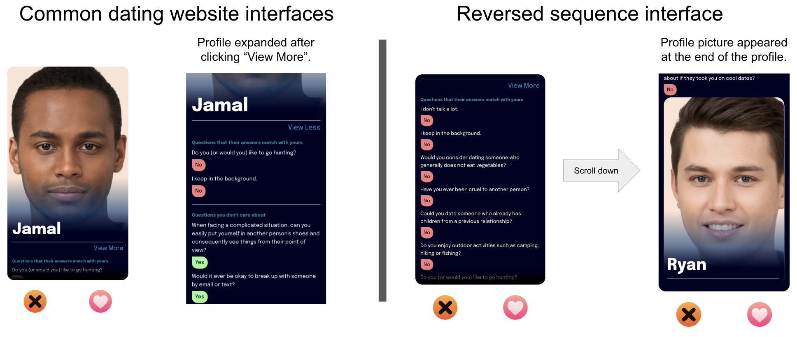
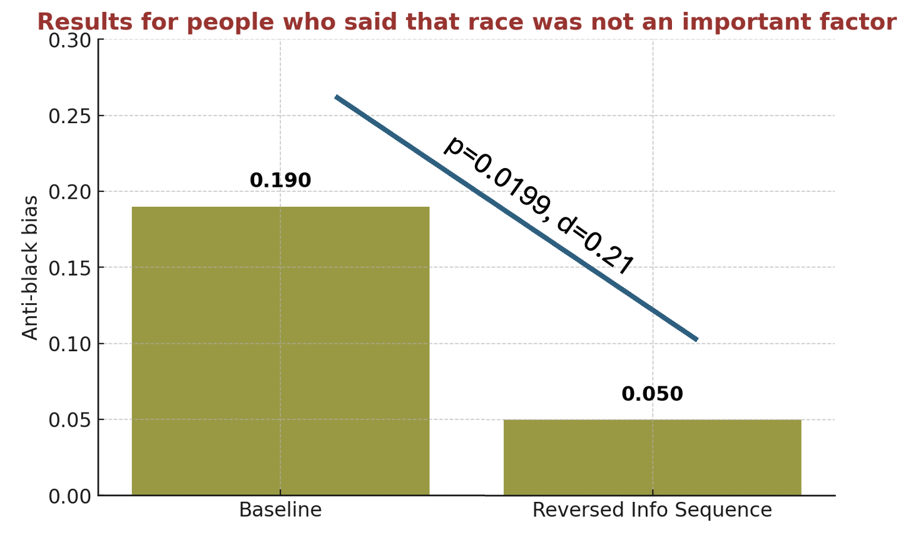

Redesigning a Dating App Interface to Reduce Implicit Racial Bias

Background
Our study draws on Daniel Kahneman's Thinking, Fast and Slow, which distinguishes between two modes of thinking: System 1, which is fast, automatic, and emotion-driven, and System 2, which is slow, deliberate, and reflective. We hypothesized that dating app interfaces disproportionately activate System 1 thinking by encouraging quick, photo-based judgments—thus increasing the likelihood of bias. Our intervention aimed to engage System 2 thinking by shifting attention to user values and interests before revealing photos.
Online dating platforms are one of the most common ways people meet, but many design choices unintentionally reinforce racial biases. In particular, swipe interfaces encourage fast, appearance-based decisions that can amplify users' implicit biases. Our research set out to explore: Can UX interventions reduce bias without removing user autonomy or engagement?
Problem
Even users who explicitly say race doesn't matter in dating often show bias in their choices. Swipe interfaces reveal photos first, prompting fast judgments. We hypothesized that reversing this order—presenting meaningful profile information before photos—might reduce biased decision-making. We also tested whether giving users a second chance to reconsider their decision (the update design) could help mitigate this effect.
Research Questions
- RQ1: Does the swipe interface encourage decisions based on racial bias rather than stated preferences?
- RQ2: Can reversing the information sequence (showing photos last) reduce implicit racial bias in user choices?
Problem Statement
Dating app interfaces that prioritize photos before personal information may inadvertently amplify racial bias in user decision-making, even among users who explicitly reject racial preferences in dating.
My Role
I led this study end-to-end: defining the problem, designing the experimental interfaces, building the simulation, recruiting participants, and analyzing results. This work was conducted under the guidance of Prof. Krzysztof Gajos, who provided research mentorship and co-authored the final publication.
Methods
We conducted a large-scale between-subjects online experiment on LabintheWild to investigate how interface design affects racial bias in dating decisions. Our experiment tested five different dating interface designs:
- Swipe (Baseline): Participants viewed a name and photo and responded with a like/dislike, simulating a standard dating app.
- Swipe + Match Score: Added a numeric compatibility score to the baseline design.
- Update Interface: Participants made an initial decision, saw the match score, and had a chance to revise.
- Reversed Sequence: Participants saw profile details (interests, answers to check-in questions) before seeing the photo and name.
- Combined: Used both the reversed sequence and update mechanisms.
Participants (N = 1,907) were randomly assigned to one interface. They interacted with 15 profiles (5 Asian, 5 Black, 5 White) across varying match scores. Profiles were controlled for attractiveness using crowdsourced ratings and constructed from generated photos and match scores based on user-defined preferences.
Interface Comparison
Left: Traditional photo-first interface. Right: Our redesigned interface presenting profile details first.
Personas & User Stories
Primary Persona: Jordan, a Thoughtful Swiper
Goals
Find partners who share meaningful values and interests
Frustrations
Unconscious bias, fast-paced swiping leads to decisions based on appearance
User Story
"As someone who wants to date beyond appearance, I need a way to get to know people's values first so I can make fairer decisions."
Secondary Persona: Maya, a Skeptical New User
Goals
Feel respected and valued while exploring dating online
Frustrations
Biased user behavior, profile photo-first interfaces reinforce racial stereotypes
User Story
"As a new user who's worried about racial bias, I want an app that encourages thoughtful matching so I'm not judged instantly by my face."
Final Design & Key Findings
We tested five interface variants, finding that the reversed sequence interface—where users saw profile compatibility before photos—was most effective in reducing bias.
Key Results
- Reversed sequence led to significant drop in anti-Black bias (OR = 0.78, p = 0.018)
- Participants spent more time evaluating profiles and showed more equitable engagement patterns
- Update condition alone didn't reduce bias, suggesting cognitive motivation matters in dating contexts

My intervention successfully reduced racially biased choices among participants who explicitly stated they were against racial preferences.
Outcome
We published this research at CHI 2022 in Not Just a Preference: Reducing Biased Decision-making on Dating Websites. The prototype remains live on LabInTheWild.org, continuing to educate the public and gather feedback.
Impact Metrics
- 1,907 participants in large-scale experiment
- Statistically significant bias reduction (Z = -2.36, p = 0.018)
- Increased profile viewing time and equalized engagement
Design Insights
- Implicit bias can be shaped by interaction order
- Interfaces can act as cognitive forcing functions
- Well-designed friction can lead to fairer decisions
Design Recommendations
- Don't place race-salient features (photos) as the first interaction point
- Center algorithmic sorting on user-stated preferences
- Support reflection by revealing potential gaps between behavior and stated values
This project demonstrates how interface design can be a lever for social equity without requiring users to change their awareness or values.
Not Just a Preference: Reducing Biased Decision-making on Dating Websites
Proceedings of the 2022 CHI Conference on Human Factors in Computing Systems
Paper